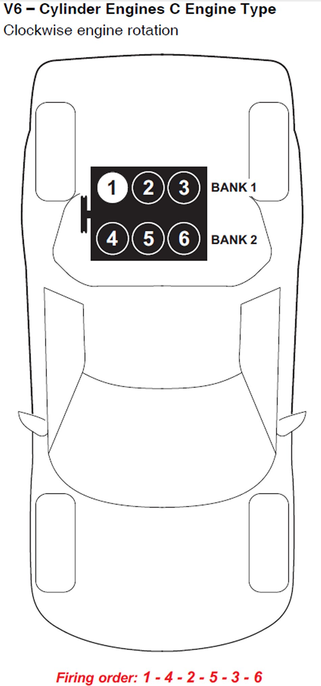

Operation CHARM
: Car repair manuals for everyone.
Home
>>
Acura
>>
2007
>>
MDX V6-3.7L
>>
Repair and Diagnosis
>>
Engine, Cooling and Exhaust
>>
Engine
>>
Tune-up and Engine Performance Checks
>>
Firing Order
>>
Specifications
Firing Order: Specifications
*Hint - See Vehicle Emissions Label for Engine Type
B Engine Type:
K Engine Type:
L5 Engine:
C Engine Type Horizontally Opposed:
C Engine Type Rear Wheel Drive:
C Engine Type Midship:

J Engine Type:
X Engine Type: